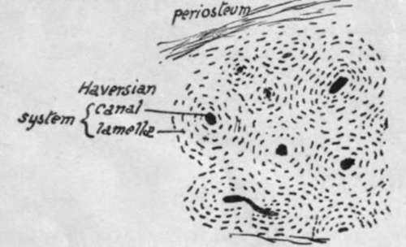
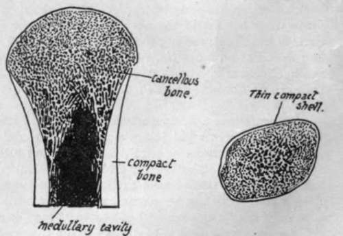

Preliminary. Part 2
Description
This section is from the book "The Anatomy Of The Human Skeleton", by J. Ernest Frazer. Also available from Amazon: The anatomy of the human skeleton.
Preliminary. Part 2
Many and various names are given to the different markings and irregularities seen on bones : thus a hole in a bone may be termed a foramen, canal, or, in certain cases, a meatus, hiatus, or (aquae) ductus. Prominences projecting more or less from the general level are called processes, trochanters, tuberosities, protuberances, tubercles, and spines, or, if more linear in disposition ridges, spines, crests, or lines. Depressions on the surfaces of bones may be fossa, cavities, fossettcs, or fovea ; if more linear in direction, grooves or sulci ; if a large cavity exists in a bone it may be described as a sinus, cell, or antrum.
Fig. 1.-Section of bone under a low power. Each Haversian system consists of a central canal containing vessels and surrounded by a number of concentric lamellae of bony tissue, between which are minute lacunae which communicate by very fine channels and hold cells (bone-corpuscles). Compact bone is composed of an aggregation of such systems.
Fig. 2.-Diagram of a section of an end of a long bone (a) and a short bone (6) to show the arrangement of cancellous and compact tissue in them.
All the names just given appear to be used more or less indiscriminately, but in a very general way the order in which they are placed above corresponds with the diminishing size of the different structural characters to which they refer.
A projecting articular process on a bone is frequently referred to as the head, its narrowed attachment to the rest of the bone as the neck, and the remainder constitutes the body, or, in a long bone, the shaft. A condyle is a protruding mass carrying an articular surface, and a ramus is a broad arm or process of bone projecting from the main bodv.
All the terms given above, with numerous others of more special usage, will be better understood both in their meaning and application by the student after a short time spent in the study of the individual bones, and no more need be said about them now.
Bones do not take shape as such ab initio, but are preformed in the embryo as condensations of mesenchyme, which in some cases become cartilaginous before ossification commences in them, but in others remain unchondrified : in the former case the bones are said to be formed in cartilage, and in the latter they are formed in membrane. These terms simply mean that the bones have replaced cartilage or non-cartilaginous " membrane " as the case may be. The process of ossification is essentially similar in both varieties of formation, save that in chondral ossification the cartilage is calcified first and then absorbed and replaced by the true bony formation. Certain large cells, called osteoblasts, have the power of depositing or forming bone round themselves : they exist in the covering tissues of the developing bone (periosteum or perichondrium), and, in the case of chondral ossification, grow into the cartilage and occupy the spaces made in that structure by the confluence of the cell-spaces that goes with calcification. The early bone thus formed is removed by the action of other cells known as osteoclasts, and in this way a medullary cavity is provided in long bones while additional bone is being laid down on the surface under the periosteum, so that the bone increases in thickness. Thus there is no direct ossification of cartilage, but a replacement of it by bone that is made in the same way as in membrane bones.
The greater part of the skeleton is composed of cartilage bones, including that of the limbs, trunk, and base of skull ; the bones of the face and vault of the skull are formed in membrane. The chondral skeleton is the modified endoskeleton, and the bones formed in membrane are usually considered to represent dermal bones, structure formed originally as part of the exoskeleton, which in the course of evolution have sunk to a deeper position and joined the other skeletal structures-
The invasion of cartilage by osteoblasts leads to an ossification commencing in the cartilage and termed endochondral, to distinguish it from that taking place under the periosteum and known as ectochondral: it is evident that ectochondral ossification, as indeed is the endochondral process really, is simply ossification in membrane occurring on cartilage.
The ossification commences constantly at one spot and at a fairly constant time in each individual bone, making a centre of ossification ; the process extends from this centre. But a bone may have more than one centre-in fact, most bones have more than one and some have several. Such centres can be divided into primary and secondary, and as a rule the primary centres appear before birth and the secondary ones after that event. The smaller secondary centres form what are termed epiphyses: an epiphysis is therefore a part of a bone which is developed from a secondary centre, is at first separated from the main bone by a connecting area of unossified cartilage, and joins the main ossification at a later date to make the adult bone. Epiphyses can be seen well in a long bone : Fig. 3 shows the condition of things in the femur, where the primary centre forms the shaft of the bone, and epiphyses lie on this as bony caps joined by plates of unossified cartilage to it. Such a shaft is known as a diaphysis. Epiphyses can be classed as traction, pressure, or atavistic : in the figure the epiphyses of the head and lower end, being in the line of weight-transmission, are pressure epiphyses, while those at the muscle attachment are traction epiphyses. Atavistic epiphyses are not found on the femur, and when they occur they are supposed to represent some past condition or process of the bone which has now no apparent function in the human skeleton. It is not impossible, however, that some of the other epiphyses are modified earlier processes and have therefore certain atavistic values.
The epiphysial cartilage that lies between the bony tissue of the epiphysis and diaphysis has an important function. We have seen that the shaft increases in thickness from the deposit of bone under the periosteum, but it is clear that this cannot lengthen the shaft, and a special arrangement is necessary if growth in length is to go on except by the slow process of interstitial increase : such an arrangement is provided by the growth in depth of the epiphysial cartilages, which just keeps ahead, so to speak, of the extension of diaphysial ossification toward the end of the bone. So the bone can grow in length as long as the cartilage remains unossified, and the growth ceases when the epiphysis joins the main bone. It follows from this that growth goes on longest at the end where the epiphysis is the last to join, and such an end is termed the growing end ; in all long bones except the fibula the centre which forms the epiphysis at the growing end, and therefore joins last, is the first to appear.
Continue to: